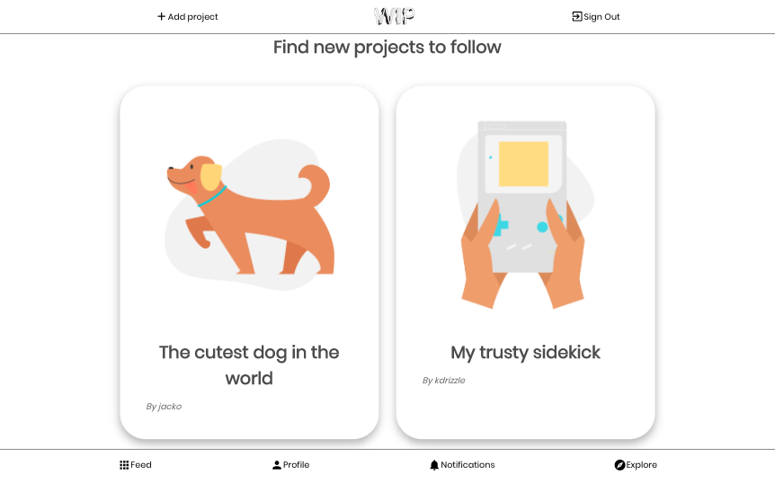

Work In Progress
Role: DevOps Lead & Developer
A social media app where creatives can post their works in progress and receive feedback from the community. Built in a team of four using React.js for the front-end, Express.js and PostgreSQL for the back-end REST API.